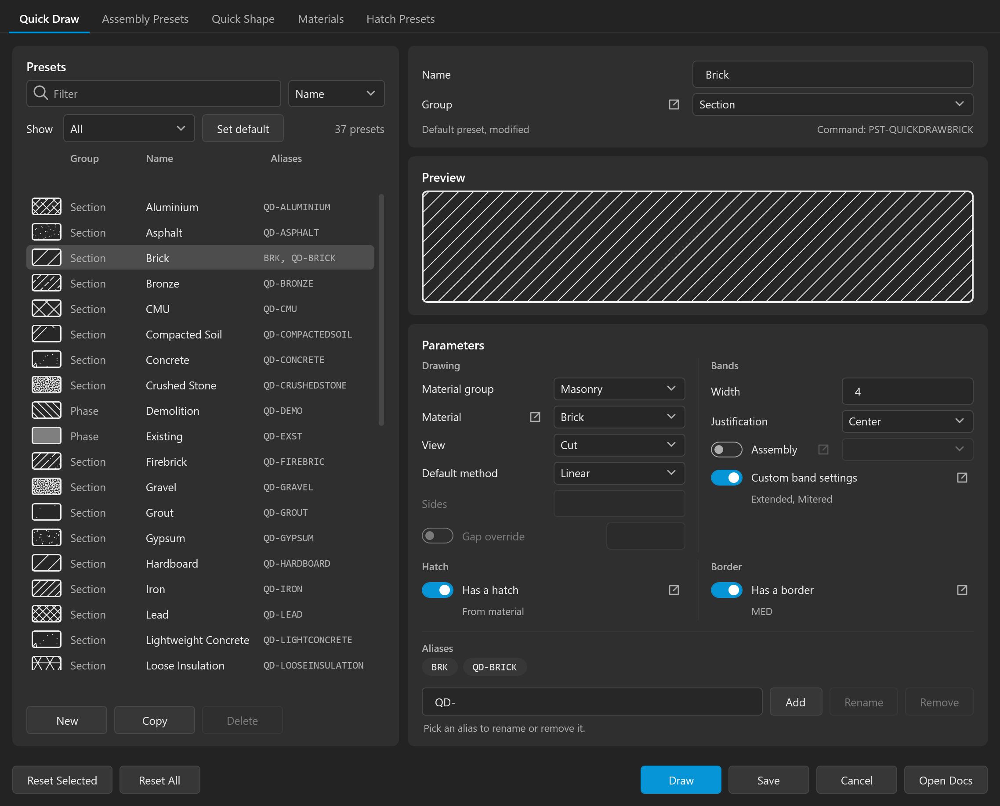

Manager
| Function Syntax | DYL-MANAGER |
| Requires | AutoCAD 2025 or later for Windows |
| Licence | GNU General Public License v3 |
Program Description
Set up every drawing tool in one window: Quick Draw, Assembly Presets, Quick Shape, Materials and Hatch Presets, each in its tab.

How To Use
- Type Dyl-Manager, or click Manager in the ribbon.
- Click a tab, or press Ctrl+Tab: the tab you leave is saved.
- Keep drawing while it is open.
- OK or Save saves, Cancel drops the changes of the tab shown, Draw draws the preset.
Good To Know
- Each tab has its own page: Quick Draw, Assembly Presets, Quick Shape, Materials, Hatch Presets.
- Only the tabs of the tools turned on in Dyl-Suite show.
- It opens again on the last tab, where you left it.
Command Names And Aliases
The short names are aliases of the command: change them in Dyl-Suite.
| Command | Aliases | Name |
|---|---|---|
| Dyl-Manager | – | Manager |